~/Mirage Persistent Kernel
Originally published on Zhihu 知乎 · 2025-09-18
2025.09.18 更新： Mirage 团队在 GPU MODE 上给了一次直播，介绍 Mirage 和 MPK 的实现：
Mirage (MPK): Compiling LLMs into Mega Kernels - YouTube
下面总结一下其中 MPK 部分的内容
传统方法（多个独立 Kernel，Kernel-Per-Layer）的限制：
- 很难用静态方法实现 workload balance，例：Attention Kernel 的通信量取决于 KV Cache length，不同的 SM 可能处理不同的 request，一些请求的 KV Cache length 可能远大于另一些，导致部分 SM 长期处于空闲状态
2. Kernel 之间天然形成了隔离，导致无法进行细粒度的 software pipelining，如下图所示
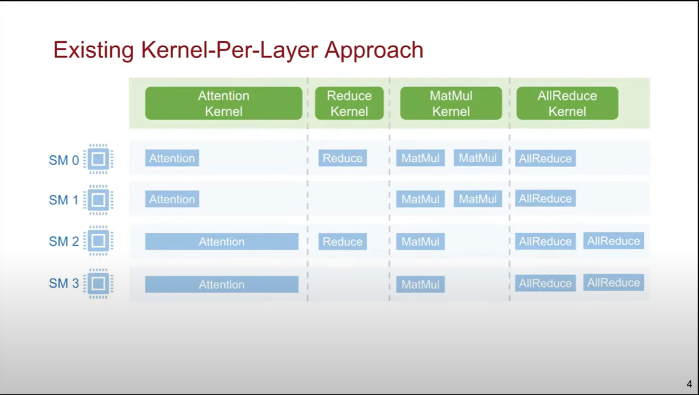
3. Kernel 之间的数据依赖是非常粗粒度的，导致不好进行细粒度的计算和通信重叠。例如上图中每个 AllReduce 实际上仅依赖于来自一个 Thread Block 的 MatMul，但多 Kernel 导致其需要等待前面全部 Thread Block 的 MatMul Kernel 执行完成才能进行 AllReduce。
4. CUDA Programming 中传统方法依赖 CUDA Graph 来减少 Kernel launch overhead，但 CUDA Graph 是静态图，难以支持动态负载
现在的 LLM 前向传播可能需要运行数千个 kernel，优化上述瓶颈非常有价值
Kernel Fusion 内核融合
把多个内核合一起。举例：下图 RMSNorm 和 MatMul 融合不需要计算中间结果 y_i，可以直接算 z_i，减少访存次数
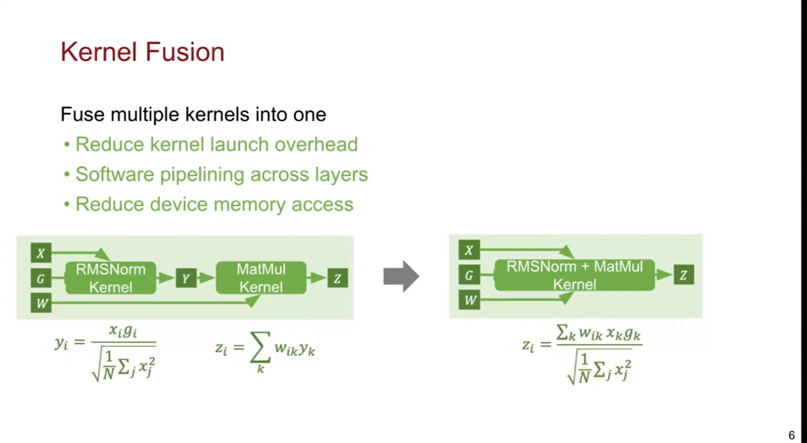
如果把 LLM 推理过程中所有算子合一起呢？
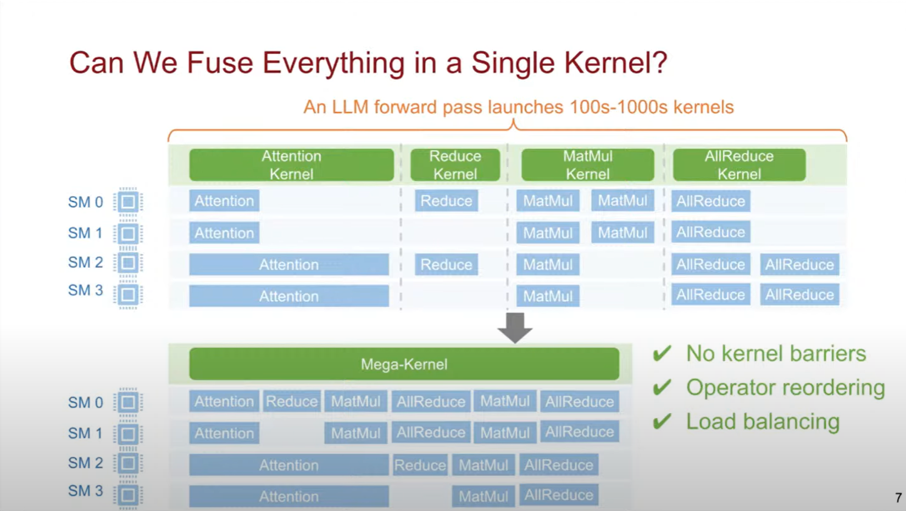
- 可以消除 kernel barriers，实现紧密的层间 software pipelining；一些 SM 的 Attention 可能更早完成，我们可以提前分配更多任务给他们以减少总延迟
- 更细粒度的依赖+操作重排序，实现计算和通信重叠
- 所有算子合并成一个 MegaKernel 之后，不再需要 CUDA Graph，Kernel launch overhead 也已经最小化。可以用一个 runtime system 来处理动态负载
MegaKernel 非常理想化，但其面临三个关键挑战：
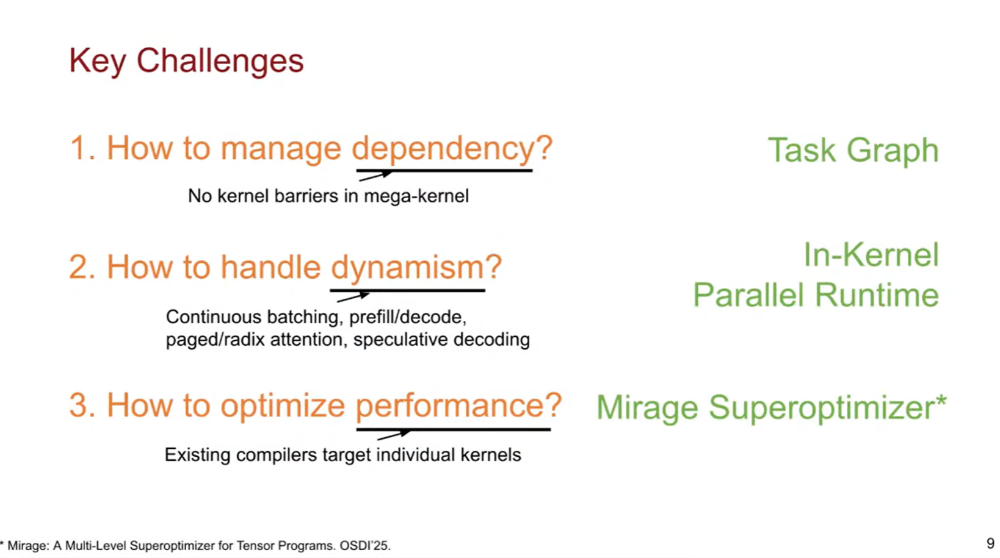
MPK 架构：
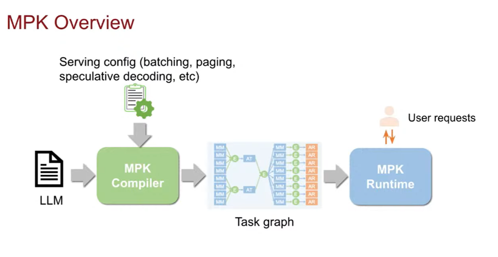
Task graph：
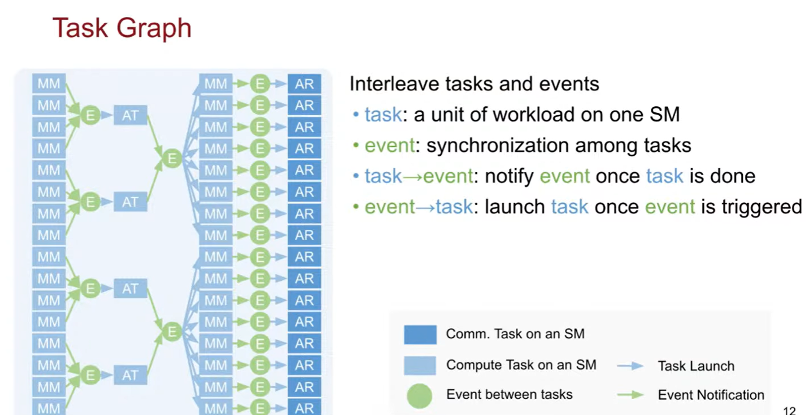
可以视为更低层级的 CUDA Graph。
MPK Compiler：
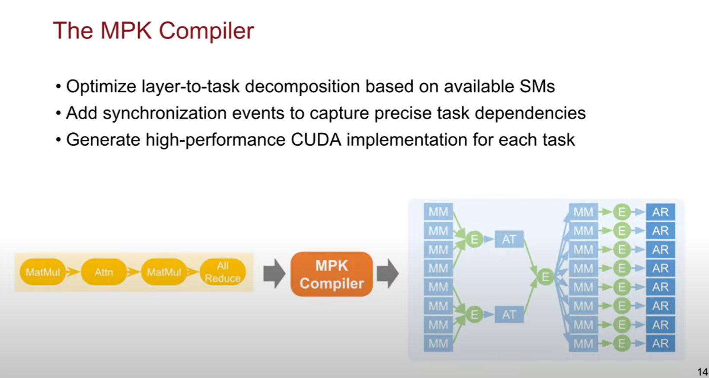
Runtime System：
两种角色：scheduler 和 worker
- 每个 scheduler 运行在一个 warp 上，一个 SM 可以并行运行四个 scheduler
- 每个 worker 运行在一个 SM 上
- 只要 1~2% 的 SM 留给 scheduler 就可以了
- 每个 worker 有自己的 task queue，每个 scheduler 也有自己的 event queue
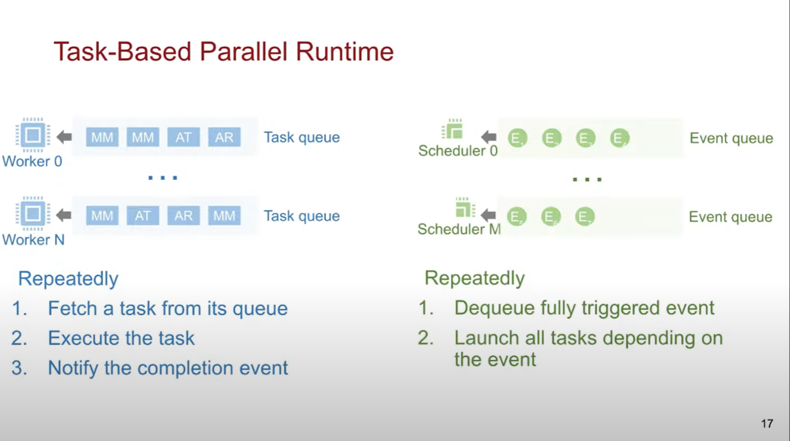
下面的例子说明了 runtime system 的运作方式，对应的 task graph 位于图片右上角：
初始时有一个不依赖于任何 task 的 event 被 scheduler 执行，其会触发所有依赖于它的 task：
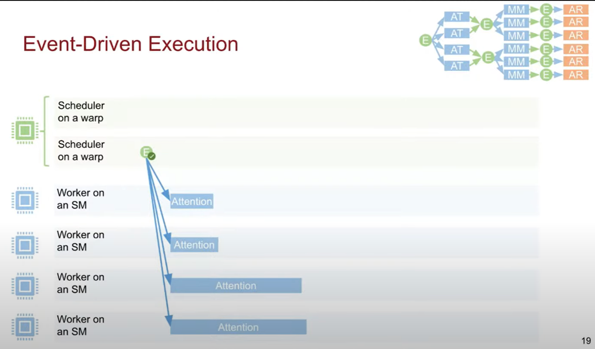
这个 task-graph 中，第二列的每个 event 各自依赖于两个 attention task，这意味着这些 event 必须各自被 task 通知两次以完全触发。
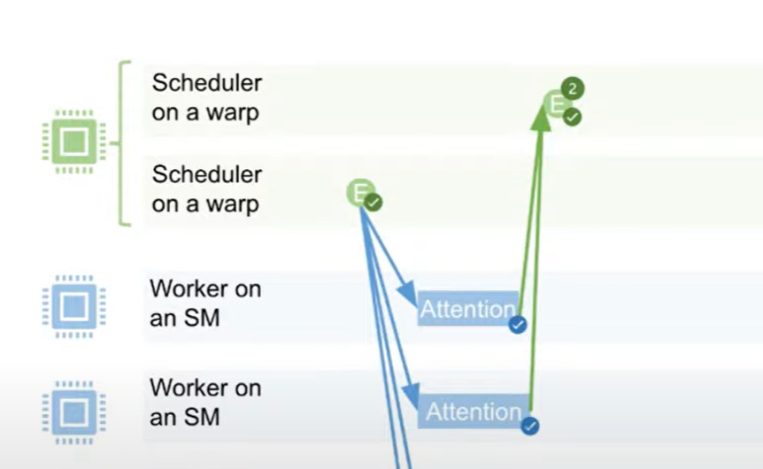
触发该事件后，一个 scheduler 会处理依赖于该 event 的后续 MatMul task
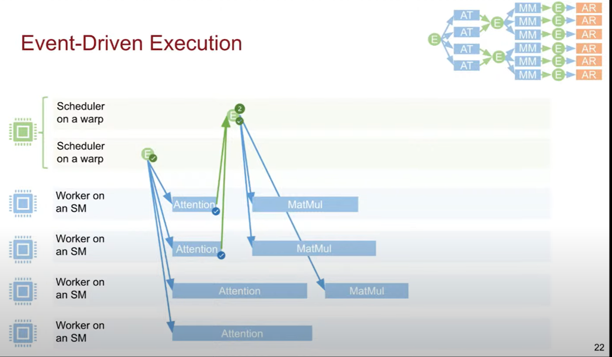
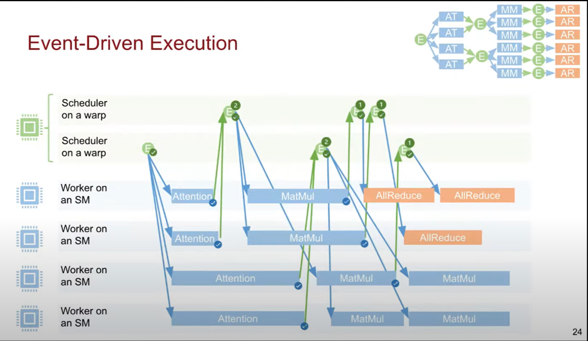
最终运行所有 task，处理所有 event，同时维持数据依赖
Mirage[OSDI 2025] 是一种多层次超优化器，旨在为 DNN 寻找高效的 tensor program。有关其详细介绍可以看之前的论文。
MPK(Mirage Persistent Kernel) 是 Mirage 的后续工作，其不仅仅是 Compiler，还包括 runtime。其将 LLM 推理时的多个 kernel 融合为一个大 kernel，减少了各个算子启动时的 CPU-GPU 开销，并将中间结果保存在片上内存中。
Background：传统方法的瓶颈
现有的主流深度学习框架和推理系统在执行 LLM 推理，特别是解码阶段时，会遇到以下几个主要的效率瓶颈：
- 内核启动开销 (Kernel Launch Overhead)：传统系统（如原生 PyTorch）将 LLM 的计算图分解为一系列独立的 GPU 内核来执行。例如，一个矩阵乘法是一个内核，一个激活函数是另一个内核，层归一化又是另一个内核 。每次启动 GPU 内核都需要 CPU 与 GPU 之间进行通信和同步，这个过程本身会产生不可忽视的开销。在解码阶段，由于每个操作的计算量很小，这些内核的启动开销甚至可能超过其实际的计算时间，成为延迟的主要来源 。
- GPU 硬件利用率不足：在低批量 (low-batch size) 场景下（例如，单个用户与聊天机器人交互时，批量大小为 1），每个独立内核的工作负载非常小，远不足以喂饱现代 GPU 上成千上万个计算单元。这导致大量的计算资源在等待下一个内核启动时处于空闲状态，形成了所谓的“流水线气泡” (pipeline bubbles)，造成了严重的硬件资源浪费
- 计算与通信的串行执行：当模型规模过大，需要进行多 GPU 分布式推理时，跨 GPU 的通信操作（例如
AllReduce）通常由 NCCL 等外部库管理。这些通信调用本身作为独立的步骤执行，会阻塞计算流水线。计算必须等待通信完成后才能继续，反之亦然，这种串行执行模式进一步加剧了延迟 。
- 内存带宽瓶颈：如前所述，解码阶段的延迟主要受限于数据（模型权重、KV 缓存）从 GPU 高带宽内存 (HBM) 传输到流式多处理器 (SM) 的速度 。在多内核执行模型中，数据可能需要在不同内核之间反复读写 HBM，而内核之间的间隙和低效的内存访问模式会使这一瓶颈更加突出。
传统推理系统处理大量连续的，微小的 LLM 解码请求时，性能瓶颈并不是单个内核的运算，而是连接不同内核产生的开销。正是为了从根本上解决这个“连接组织”问题，MegaKernel 和 MPK 等工作采用了融合的持久化的巨核。
巨核只有一次内核启动开销，并且内部可以实现细粒度的软件流水线。此外，巨核将原先阻塞的通信操作分解为许多小任务，将其与计算重叠在一起执行，显著提升分布式推理的效率。如果再把调度器放在 GPU 上，巨核就可以省去和 CPU-GPU 间开销。
虽然巨核性能优势巨大，但编写巨核非常难，并且现有的框架缺乏对巨核的原生支持。
Mirage Persistent Kernel 自动生成持久化巨核
MPK 作为一个完整的系统，由两个核心组件构成：一个负责转换和优化的编译器，以及一个负责在 GPU 上高效执行的运行时。
MPK Compiler：从 Pytorch 到优化的任务图
MPK 编译器的核心职责是将一个高级、粗粒度的计算图，转化为一个低级、细粒度且高度优化的执行蓝图。
编译器的输入是用户在 PyTorch 中定义的 LLM 计算图，MPK 编译器首先将计算图进行分解，转为更细粒度的 task graph 任务图。与原始计算图相比，任务图揭示了更多的并行机会：一个宏观的 AllReduce 操作在任务图中会被分解为多个微小的发送和接收任务。
MPK 编译器集成了 Mirage，其能为任务图中每个任务生成高性能的 CUDA 实现。
MPK 编译器的输出是定义了所有细粒度任务之间依赖关系的优化任务图和与每个任务相对应的、由 Mirage 超优化器生成的高性能 CUDA 代码片段。
MPK Runtime：在 GPU 上的调度器
MPK 运行时是巨核的核心，它完全在 GPU 上运行，负责根据编译器生成的任务图来调度和执行所有任务。整个运行时系统被封装在一个巨核中，通过一次 cudaLaunchKernel 调用启动。这意味着在整个 LLM 推理循环中，不再有任何额外的内核启动，从而根除了 CPU-GPU 的交互开销。
在巨核启动时，GPU 上的所有流式多处理器 (SM) 被静态地划分为两种角色，且在整个运行期间保持不变：
- Workers：负责计算任务：从任务队列中获取一个任务，执行它，然后在任务完成后通知一个相应的完成事件
- Schedulers：它们持续监控事件状态，一旦某个任务的所有依赖事件都已完成，调度器就会将该任务放入工作者的任务队列中，供其拾取执行。这种设计避免了任何动态的上下文切换开销
整个系统的协调是通过一个轻量级的事件系统完成的。当一个工作者 SM 完成任务时，它会触发一个或多个事件。调度器 SM 观察到这些事件后，会检查任务依赖图，并将所有已满足前置条件的后续任务变为“就绪”状态，分派给工作者。
MPK API
MPK 的设计目标之一是提供一个简洁易用的接口。让开发者仅需少量代码就能完成 LLM 到巨核的编译。具体的建议看文档。
MPK 的局限性
MPK 架构的静态性使其无法很好地处理 MoE 模型这样的动态工作负载，并且每当新硬件发布可能都要手动进行适配。
目前的调度方式是通过 round-robin 来将任务分配给 worker SM，后续可能可以加入优先级调度
没有集成到主流框架（vllm，sglang，PyTorch 等）中。如果能进，那会吸引大量开发者为其做贡献，成为一个很强有力的工具
暂不支持 Paged 和 Radix attention，批处理能力存疑
总结
巨核编译器+运行时+超优化器的这个思路可以不局限于 LLM，甚至可以迁移到任意有“多个小批量请求，单次请求涉及多个 CPU-GPU 通信且可以分解为多个小任务”的场景
// EOF